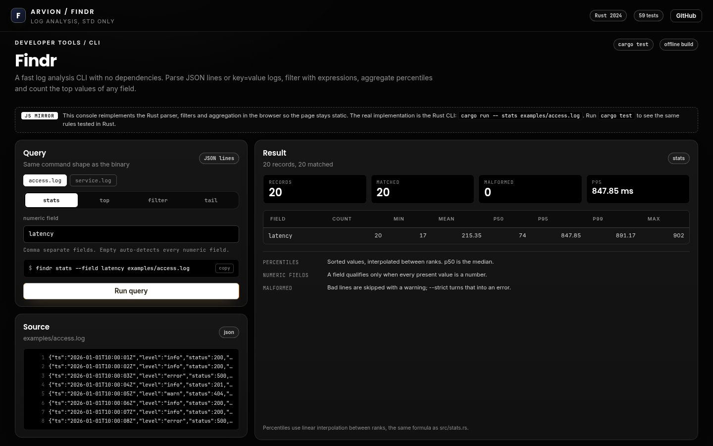

Product sample · Rust
Findr
A log analysis CLI written in Rust with no external crates. It parses JSON lines and key=value logs, filters with expressions, aggregates counts and percentiles, finds top values and follows a file in tail mode.
Rustlanguage
0crates
59tests
stats, top, filter, tailcommands

The problem
Logs are easy to read once.
Reading one log line is trivial. Answering questions across a million of them at 2am is not: what is the p99 latency, which endpoint is slowest, what changed after the deploy?
Findr answers those questions from the shell, with a parser that is strict about malformed lines and commands that print either a table for humans or JSON for another tool.
What we built
One binary, no dependencies.
- Parser for JSON lines and key=value formats, with dotted keys flattened into one namespace.
- Filter expressions: equality, inequality, contains and numeric comparisons, combined with AND.
- Aggregations: count, min, max, sum, mean, p50, p95 and p99 per field.
- Top-N by any field, and a tail mode that polls a file and follows truncation.
- CLI output as a table, JSON or raw values, with a strict mode for malformed input.
Architecture
How it is put together
src/ ├─ parser.rs (json + kv, typed values) ├─ filter.rs (expression parsing and evaluation) ├─ stats.rs (count, sum, percentiles) ├─ aggregate.rs (grouping, top-N) ├─ tail.rs (follow, truncation) └─ main.rs (CLI) tests/cli.rs integration tests spawn the binary against fixtures scripts/test.sh runs cargo test
Stack
Rust 2024std only
Security and money
- Zero dependencies means the binary is small and `cargo test` runs offline in CI.
- Percentiles use the nearest-rank method and the README states it, so the numbers can be checked.
- Malformed lines are reported, not silently dropped; strict mode makes them fatal.
- The browser demo is a mirror of the parser and aggregation logic, and says so on the page.
Screens
Product surfaces
Similar work
Building something in this category?
We can walk you through the architecture, the payment integration and the failure cases on a call, including the parts that were hard.